= 0.333 33…
= 0.333 33…先来思考一个数学界普遍认可，但大多数人第一眼见到时都觉得不正确的命题：
0.999 99… = 1
所有人都承认这两个数字非常接近，也可以说是无比接近，但很多人仍然认为不应该把它们视为同一个数。下面，我将提供不同的证据，证明这两个数字其实相等。我希望其中至少有一个解释可以让你感到满意。
如果大家认为下面这个等式成立
= 0.333 33…
那么，最简便的证明方法可能就是在上式两边同时乘以3，然后得到：
1 =
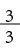
= 0.999 99…第二种证明方法是本书第6章用过的循环小数计算方法。我们用变量w来表示无穷小数展开式：
w = 0.999 99…
在等式两边同时乘以10，就会得到：
10w = 9.999 99…
再用第二个等式减去第一个等式：
9w = 9.000 00…
由此得到：w = 1。
下面这种证明方法无须使用任何代数运算。如果两个数字不相等，那么它们中间必然存在一个不等于它们的数字（例如平均数）。大家对于这句话应该没有异议吧？我们采用反证法，假设0.999 99…与1是两个不相等的数字。在这种情况下，它们中间是否存在其他数字呢？如果无法找到这样的数字，就说明0.999 99…与1不可能是两个不相等的数字。
如果两个数字或者两个无穷和彼此之间无限接近，我们就说这两个数字或无穷和相等。换句话说，你随便选一个正数，比如0.01、0.000 000 1或者十亿分之一，这两个数字之间的差都比你选的这个数字小。由于1和0.999 99…的差小于任意正数，因此数学界一致认为这两个数字是相等的。
同理，我们可以算出下面这个无穷级数的和：
1 + +
+
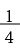
+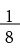
+ + …= 2
+ …= 2
我们用一个具体的方式来解释这个和。假设你朝着2米外的一堵墙壁走过去，第一步正好是1米，第二步是0.5米，然后是1/4米、1/8米，以此类推。每走一步，你与墙壁之间的距离就缩短1/2。不考虑在实际情况下步幅下限的问题，最后你如愿以偿地无限接近那堵墙。也就是说，所有步幅的总和正好等于2米。
如下图所示，我们还可以用几何方法来表示这个和。假设我们有一个1×2的矩形，面积为2。然后，我们将它切去1/2，再切去1/2，就这样不停地切下去。第一次切完后矩形的面积是1，接下来依次是1/2、1/4……随着n趋于无穷大，这些切掉的部分就会组成整个矩形，因此它们的总面积为2。
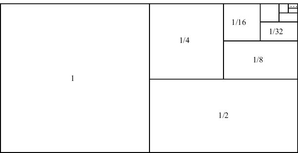
+ + + + …= 2的几何证明法下面再介绍一种基于代数运算的解释方法。观察下表给出的“部分和”（partial sums）公式。
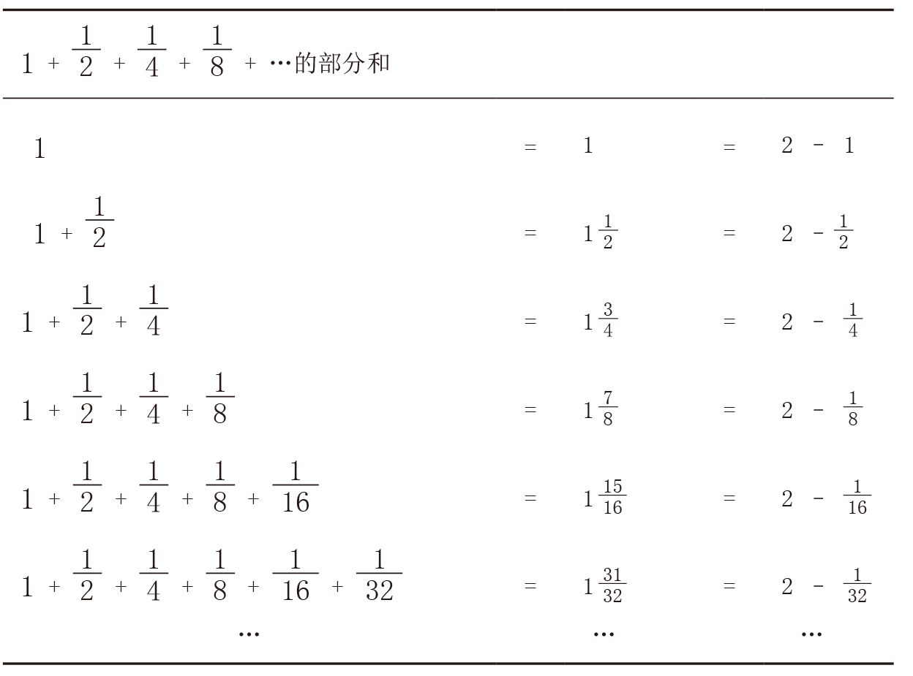
表中给出的部分和似乎表明，对于n H 0，有：
1 + + + … +
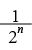
= 2 –我们可以通过归纳性证明法（参见本书第6章）验证上述结论，也可以把它视为下面给出的有穷等比数列求和公式的一个特例。
定理（有穷等比数列）：对于x ≠ 1且n H 0，有：
1 + x + x2 + x3 + … + xn =
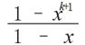
证明方法1：这条定理可以按照以下方式，利用归纳性证明法来验证。当n = 0时，该公式可以简化为1 =
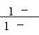
，这个等式毫无疑问是成立的。现在，我们假设当n = k时公式成立，就有：1 + x + x2 + x3 + … + xk =
当 n = k + 1时，即在上式左右两边同时加上 xk+1，就会得到：
1 + x + x2 + x3 + … + xk + xk+1 = + xk+1
= +
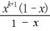
=
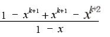
=
也就是说，当 n = k + 1时，公式仍然成立。证明完毕。 □
或者，我们也可以采用下面这种代数证明法。
证明方法2：令
S = 1 + x + x2 + x3 + … + xn
两边同时乘以x，就会得到：
xS = x + x2 + x3 + … + xn + xn+1
用第一个等式减去第二个等式，可以消去很多项，得到：
S – xS = 1 – xn+1
也就是说，S (1– x) = 1 – xn+1，即S =。
请大家注意，当 x = 1/2时，有穷等比数列的和与我们前文中发现的规律一致：
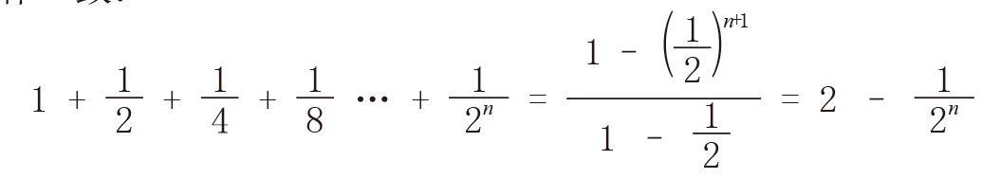
当n不断增大时，(1/2)n将会趋近于0。因此，当n → ∞时，就有：
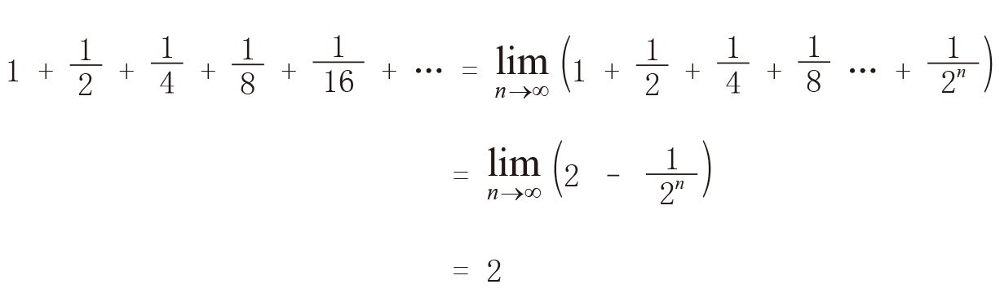
跟大家讲一个只有数学界人士才会觉得有趣的笑话。一大群数学家走进一间酒吧。第一个人说：“我要一杯啤酒。”第二个人说：“我要半杯啤酒。”第三个人说：“我要1/4杯啤酒。”第四个人说：“我要1/8杯啤酒。”酒吧招待一边给他们递来两杯啤酒，一边大声说道：“我知道你们的极限！”
一般地，对于任意一个–1~1之间的数字而言，如果不断增加它的幂，它就会越来越趋近0。由此，我们便有了非常重要的（无穷）等比数列。
定理（等比数列）：对于 –1 < x < 1，有：
1 + x + x2 + x3 + x4 + … =
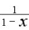
令 x = 1/2，就可以用等比数列解决上面的最后一个问题：
1 + + + + + … =
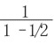
= 2等比数列看上去是不是有些眼熟？这是因为在上一章的结尾部分，我们曾用微积分证明函数 y = 1/(1– x)等于泰勒级数1 + x + x2 + x3 +x4 + …
利用等比数列，还可以得出什么结果？请大家思考下面这个求和问题：
+ +
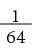
+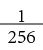
+ …从各项中分别提取1/4，上式就会变成：
(1 + + + + …)
根据等比数列公式（令x = 1/4），上式可以简化为：
(
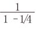
) =× =
=
这个级数有一个无须只言片语并且充满美感的证明方法（如下图所示）。注意，图中黑色方块正好占大方块面积的1/3。
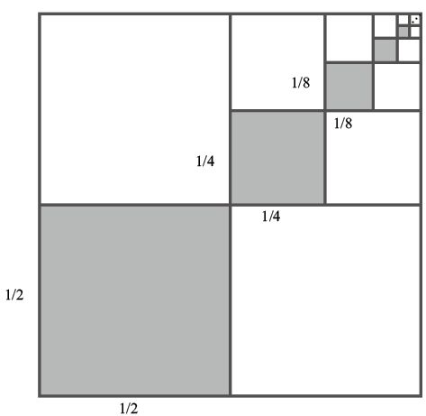
我们甚至还可以用等比数列来解决0.999 99…问题，这是因为无穷小数展开式其实就是伪装后的无穷级数。具体来说，我们可以用x = 1/10的等比数列加以证明：
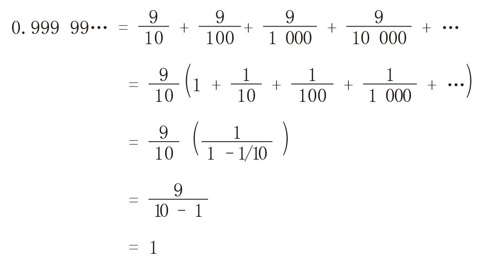
即使x为复数，只要它的模小于1，等比数列公式同样成立。例如，虚数i/2的模为1/2，根据等比级数公式，我们可以得到：
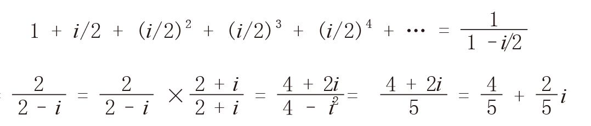
展现在复平面上的情况如下图所示。
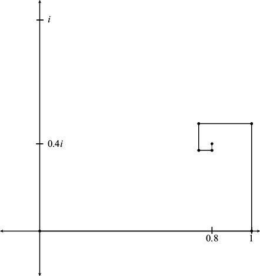
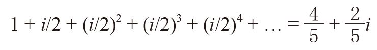
有穷等比数列公式成立的条件是x ≠ 1，而（无穷）等比数列则要求 |x| < 1。例如，当 x = 2时，有穷等比数列的和为：
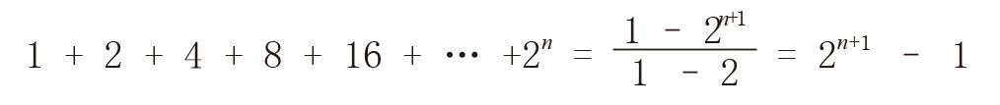
但是，将 x = 2代入等比数列公式，却会得到：
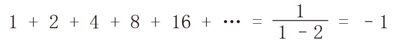
这个结果荒谬可笑。（不过，我们的眼睛有时也会欺骗我们。在本章的最后一节，我们就会发现这个结果其实有一个可以让我们接受的理由。）
正整数有无穷多个：
1，2，3，4，5…
正偶数也有无穷多个：
2，4，6，8，10…
数学家说，正整数集与正偶数集的大小（或者叫作基数、无穷大阶数）是相同的，因为这两个集合可以形成一一对应的关系：
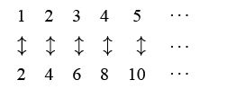
可以与正整数集形成一一对应关系的集合叫作“可列集”，可列集的无穷大阶数最低。元素可以一一排序的集合都是可列集，因为在排列时，第一个元素对应1，第二个元素对应2，以此类推。
包含所有整数的集无法按照由小到大的顺序一一排列（哪个数字应该排在第一位？）：
…–3，–2，–1，0，1，2，3…
但是，这些数字可以下面这种方式排列：
0，1，–1，2，–2，3，–3…
也就是说，整数集是可列集，它的大小与正整数集相同。
正有理数集呢？该集合的所有元素都是 m/n形式的数字，其中m 和n是正整数。也许你不相信，但正有理数集确实是可列集，因为它的元素可以按照下面这种方式排列：
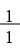
，，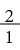
，，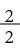
，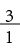
，， ，
，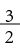
，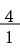
…在排列时，我们按照分子、分母的和来确定各个元素的先后次序。由于这个排列方式可将所有有理数都涵盖在内，因此正有理数集也是可列集。
是否存在不是可列集的无穷数字集呢？德国数学家格奥尔格·康托尔（Georg Cantor，1845~1918）证明，0~1之间的所有实数构成的集合是不可列集。你也许想按照下列方式或者其他类似方式来列举这些实数：
0.1，0.2，…，0.9，0.01，0.02，…，0.99，0.001，0.002，… 0.999，…
但是，只有那些位数有限的数字才会被列举出来，而像1/3 =0.333…这样的数字永远也不会出现。是不是可以想出更有创意的办法，列举出所有实数呢？康托尔通过以下方法证明这是不可能做到的。他先假设实数可以一一排列，然后他给出了一个具体的例子，比如这个排列的前几个元素是：
0.314 159 265…
0.271 828 459…
0.618 033 988…
0.123 581 321…
…
我们可以找出一个不属于这个排列的实数，从而证明这个排列是不完整的。具体来说，这个实数就是0.r1r2r3r4…，其中r1是0~9的整数且不同于该排列的第一个数字的第一位数（在本例中，r1 ≠ 3），r2则不同于该排列的第二个数字的第二位数（在本例中，r2 ≠ 7），以此类推。比如，这个数字可以是0.267 4…。这样的数字是不可能出现在上述排列中的，这个数字与排列中的第100万个数字有什么不同？答案是它们的第100万位数字不相同。因此，无论你想出什么样的排列方法，都必然会遗漏某些数字，从而证明实数是不可列集。这个证明方法被称为“康托尔对角线证明法”，不过我宁愿称之为“康托尔举例证明法”。（抱歉。）
从本质上讲，我们已经证明无理数远比有理数多，尽管有理数也有无穷多个。你在实数线上随机选择一个实数，几乎可以肯定这个数字是无理数。
概率问题中经常出现无穷级数。假设你投掷两枚6面色子。如果投掷的结果不是6点，也不是7点，就需要继续投掷。如果先掷出6点，你就赢了，否则你就输了。你在游戏中获胜的概率是多少？每次投掷都有6×6个概率相同的可能结果。当然，其中有5个可能的结果是6[即(1, 5)、(2, 4)、(3, 3)、(4, 2)和(5, 1)]，有6个可能的结果是7[即(1, 6)、(2, 5)、(3, 4)、(4, 3)、(5, 2)和(6, 1)]。如此看来，你获胜的概率不到50%。直觉告诉我们，在36个可能的结果中，只有5 + 6 = 11个有效结果，如果出现其他结果，就都需要重新投掷。而在这11个结果中，有5个意味着你赢了，有6个意味着你输了。因此，你获胜的概率似乎是5/11。
利用等比数列，我们可以证明你获胜的概率的确是5/11。第一次投掷时，你获胜的概率是5/36。第二次投掷呢？要在第二次投掷时获胜，第一次投掷时就不能出现6或7，而且第二次必须掷出6点。第一次投掷时出现6或7的概率是5/36 + 6/36 = 11/36，也就是说，既不是6又不是7的概率是25/36。第二次投掷获胜的概率是25/36与5/36（独立投掷情况下出现6的概率）的乘积，也就是 (25/36)×(5/36)。要在第三次投掷时获胜，前两次投掷就不能掷出6或7，而且第三次必须掷出6。因此，第三次投掷获胜的概率为 (25/36) ×(25/36) ×(5/36)。第四次投掷获胜的概率是 (25/36)3×(5/36)，以此类推。把所有这些概率加到一起，就是你获胜的概率：
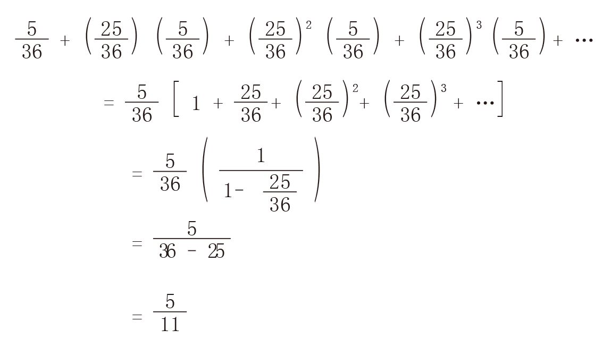
证明完毕。 □